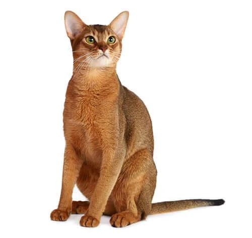
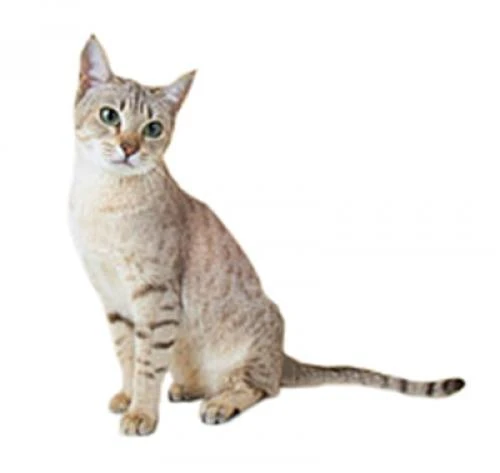
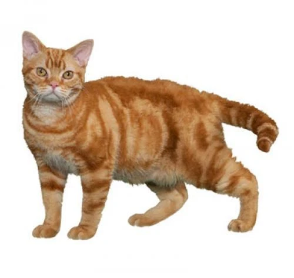
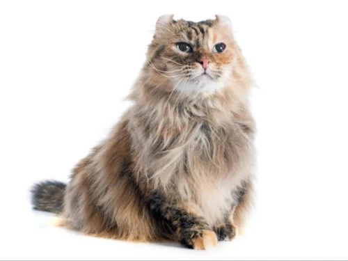
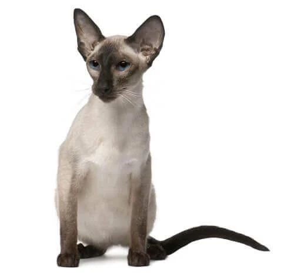
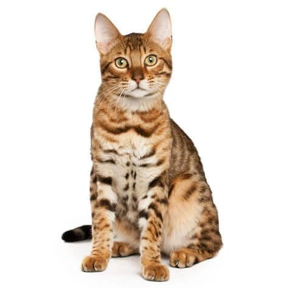

Абиссинская кошка
Абиссинская порода — это элегантные кошки средних размеров с сильными грациозными телами и длинными
стройными лапами. Для этой породы характерны округлая клиновидная форма головы с большими миндалевидными
глазами и уши с небольшими кисточками на кончиках. Короткая прилегающая шерсть абиссинской кошки отличается
тикингом — смешением цветов на каждом из волосков. Наиболее популярный окрас — «дикий» (ruddy), но также
встречаются и другие виды.

Австралийский мист
Австралийский мист — редкая и на сегодняшний день пока единственная порода домашних кошек, выведенная на
территории Австралии. Подробнее об этих питомцах, особенностях их внешности, характера и содержания —
читайте в нашей статье.

Американская жесткошерстная кошка
Американские жесткошерстные кошки пока еще мало известны всему миру, поскольку их разведением занимаются
преимущественно питомники США. Появилась порода случайно — благодаря мутации гена, отвечающего за прямоту
шерсти. Из-за волнистой и упругой структуры волосков кошек в обиходе называют «проволочными». Об
особенностях поведения, характера и ухода за кошками с необычной шерстью читайте в этой статье.

Американский керл
Необычная порода кошек с завернутыми ушами появилась в результате случайного сбоя на генетическом уровне.
Обладатели изящного завитка ушного хряща быстро получили признание Международной ассоциации кошек и
продолжают завоевывать любовь владельцев не только благодаря своей внешности, но и дружелюбному и
покладистому характеру.

Балийская кошка
Балийские кошки — изящные и грациозные питомцы с утонченной, аристократической внешностью и добродушным,
общительным характером. Подробнее об их происхождении, повадках и особенностях содержания — читайте в нашей
статье.

Бенгальская кошка
Бенгальские кошки привлекают экзотическим леопардовым окрасом и преданностью владельцу. Они игривы,
энергичны и очень умны. Кажется, бенгалы оценивают все вокруг и как бы спрашивают: «Можно с этим поиграть?».
Проворны, любят охотиться, карабкаться и высоко забираться.
